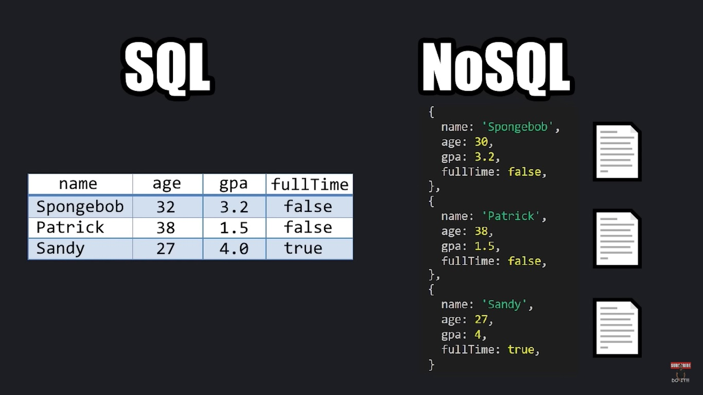

Introdução ao MONGODB
MongoDB é um NoSQL BD, ou seja ele sai do formato SQL com tabelas que é usado em diversos bancos de dados no passado.
Font: Bro Code - Learn MongoDB in 1 hour 🍃 (2023)
A ideia do MongoDB é se parecer com um JSON, os dados são armazenados em objetos.
Informações que estão relacionadas são colocadas no mesmo documento.
Os dados são armazenados em pares similares a um formato JSON, porém na verdade é BJSON(binary JavaScript Object Notation)
Um documento do MongoDB é um grupo de pares de Campo-Valor
Uma coleção é um grupo de 1 ou mais documentos.
Um DataBase é um grupo de 1 ou mais coleções.
Mongo DB Compass é a interface gráfica pro MongoDB, quenem MySQL Workbench para o MySQL
MongoDB Commands
Comandos
| COMANDO | Função |
|---|---|
| show dbs | Mostra todos os DataBases |
| use data_base_name | Seleciona um banco de dados. Caso esse banco não exista, ele cria esse banco. Ele não aparecerá na lista do show dbs porque está vazio ainda. |
| db.createCollection('collection_name') | Cria uma coleção no Banco |
| db.dropDatabase() | Deleta um DataBase |
| db.collection_name.insertOne({document_info}) | Insere um dado no banco de dados. Caso a coleção não exista ele cria ela. |
| db.collection_name.find() | Retorna todos os documentos dentro da coleção. |
| db.collection_name.insertMany([{document_one}, {document_two}, {document_three}...]) | Insere vários documentos em uma coleção |
| db.collection_name.find().sort({propertie_name: 1}) | Retorna os documentos em ordem alfabética baseando-se na propriedade escolhida. Para inverter a ordem alfabética usa-se -1. |
| db.collection_name.find().limit(limit_number) | Seleciona quantos documentos quer que sejam retornados. |
| db.collection_name.updateOne(filter, update) | Atualiza um dado. No primeiro parâmetro selecionamos qual documento, o segundo o que mudaremos. Para mudar o valor de um campo, usa-se o $set. |
| $set:{} | Set operator: muda o valor de um campo |
| $unset:{} | Unset Operator: remove um campo. O campo tem que ser renomeado para uma string vazia para ser removido. |
| db.collection_name.updateMany() | Modifica vários documentos. |
| $exists: | Seleciona se existe. Caso coloquemos $exists:false seleciona os que nçao existem. |
| db.collection_name.deleteOne(filter) | Deleta o documento |
| $ne: | Not Equal Operator -> Seleciona todos que não sejam igual a... |
| $lt: | Less Than -> Seleciona todos menor que... |
| $gt: | Greater Than -> Seleciona todos os menores que... |
| $lte: | Less Than Equal -> Menor ou igual |
| $gte: | Greater Than Equals -> Maior ou igual |
| $in:[] | Retorna todos que tenham algum dos valores dentro o array no campo determinado |
| $nin:[] | Retorna todos que não tenham algum dos valores dentro do array no campo determinado |
| $and:[] | Para retornar, todas as condições dentro dos colchetes tem que ser satisfeitas. |
| $or:[] | Para retornar, pelo menos uma das condições dentro dos colchetes tem quer satisfeita |
| $nor:[] | Retorna todos que nenhuma das condições satisfaça É como um $and ao contrário. |
| $not:{} | Negação |
| db_collection_name.find({...}).explain('executionStats') | Pede para que o terminal explique o status de execução da query |
| db.collection_name.createIndex(apply_field: 1) | Coloca um index em um campo desejado. 1 deixa ordem crescente, -1 deixa ordem decrescente. O MongoDB lê todos os documentos até achar o que nós queremos, com index ele lê apenas o que tenha o index que queremos, agilizando muito o processo. Usar index de maneira moderada, pois facilita na busca, porém ocupa mais memória e demora mais para inserir, remover ou deletar. |
| db.collection_name.getIndexes() | Mostra todos os index's que temos |
| db.collection_name.dropIndex('index_name') | Remove todos os index com aquele nome |
| show collections | Mostra todas as coleções |
| db.collection_name.drop() | Deleta coleção |
Find Method
O método find() recebe dois parâmetros, que se chamam query e projection.
Query -> Define a caracerística do documento que queremos retornar. É Opcional.
Projection -> Define qual campo do documento queremos. Também é opcional. Deve receber true para ser retornado o valor.
ex:db.students.find({}, {id_:false, name:true}) || Result: Retorna o nome de todos os estudantes e remove o id
Create Collection
Podemos passar alguns argumentos logo ao criar uma coleção.
{capped:true size:1000000, max:100} -> Define uma capacidade maxima de 1.000.000 de bytes e no máximo 100 documentos {autoIndex:true/false} -> Cria indexes automaticamente ou não.Próximos Passos MongoDB
This video will give you and introduction to MongoDB in 1 Hour. Afterwards I recommend exploring aggregation, replication, and sharding. Comment below if you would like an extended version of this video.